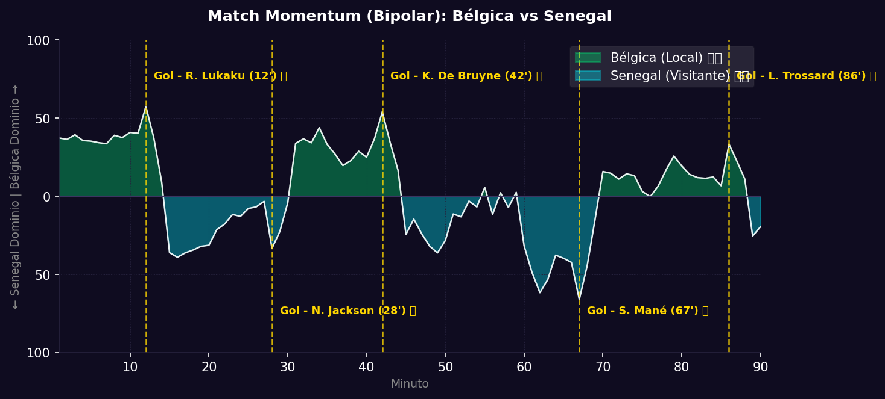

Dieciseisavos
 Senegal
Senegal
Bélgica vs Senegal
📅 2026-07-01 · 🕒 19:00 (Local)
Bélgica

3 - 2
FINALIZADO
Senegal
📅 2026-07-01 · 🕒 19:00 (Local)
Senegal
En un auténtico partidazo lleno de goles y emociones, Bélgica selló su boleto a Octavos al superar 3-2 a Senegal. El encuentro fue un torbellino desde el arranque. A los 12', Romelu Lukaku puso el 1-0 tras conectar un centro raso de De Bruyne. Senegal reaccionó de inmediato y empató al 28' gracias a un golazo de Nicolas Jackson tras un regate fantástico en el área. Antes del descanso, Bélgica retomó la ventaja al 42' con un soberbio remate lejano de Kevin De Bruyne para el 2-1.
En la segunda mitad, Senegal salió con todo y volvió a igualar el encuentro en el minuto 67' por medio de Sadio Mané, quien transformó un penal cobrado con potencia. Cuando parecía que el duelo se encaminaba a la prórroga, una gran combinación colectiva de los belgas en el minuto 86' finalizó con Leandro Trossard empujando la pelota en el segundo palo para decretar el vibrante 3-2 final.
El gráfico de Match Momentum dibuja un partido sumamente abierto y bipolar, con picos de intensidad alternados. Bélgica dominó las posesiones largas en el primer tiempo, mientras que Senegal generó un torrente de contragolpes letales tras el empate parcial a los 67'.
El Match Point (Punto Crítico) se situó en el minuto 86' con la aparición de Leandro Trossard. Senegal se encontraba volcado al ataque en busca del triunfo, dejando espacios desprotegidos atrás. La lucidez de De Bruyne para habilitar al espacio y la oportuna llegada de Trossard por el segundo palo liquidaron las esperanzas de los Leones de la Teranga.
